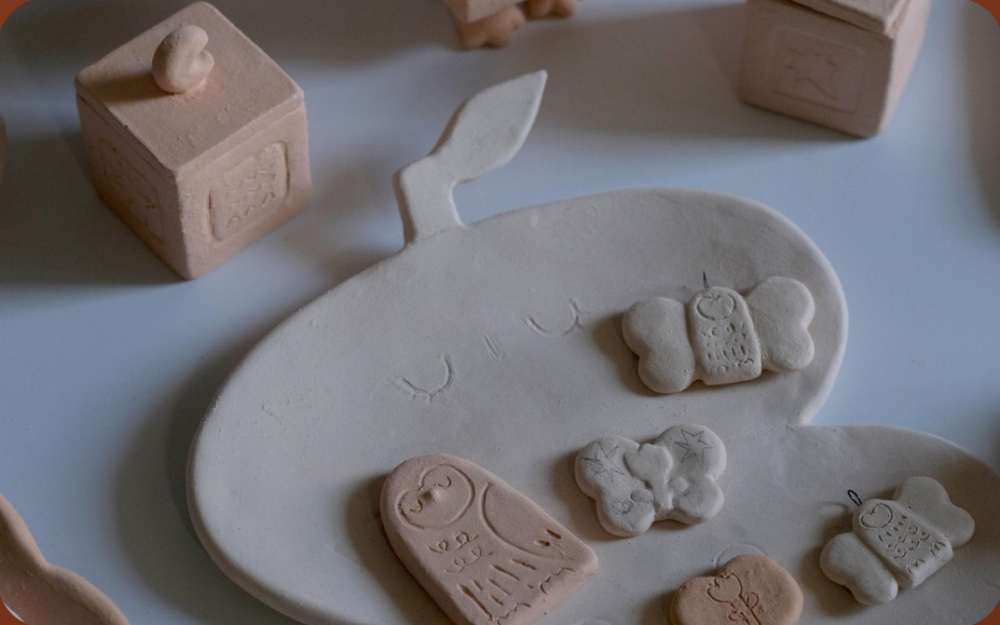
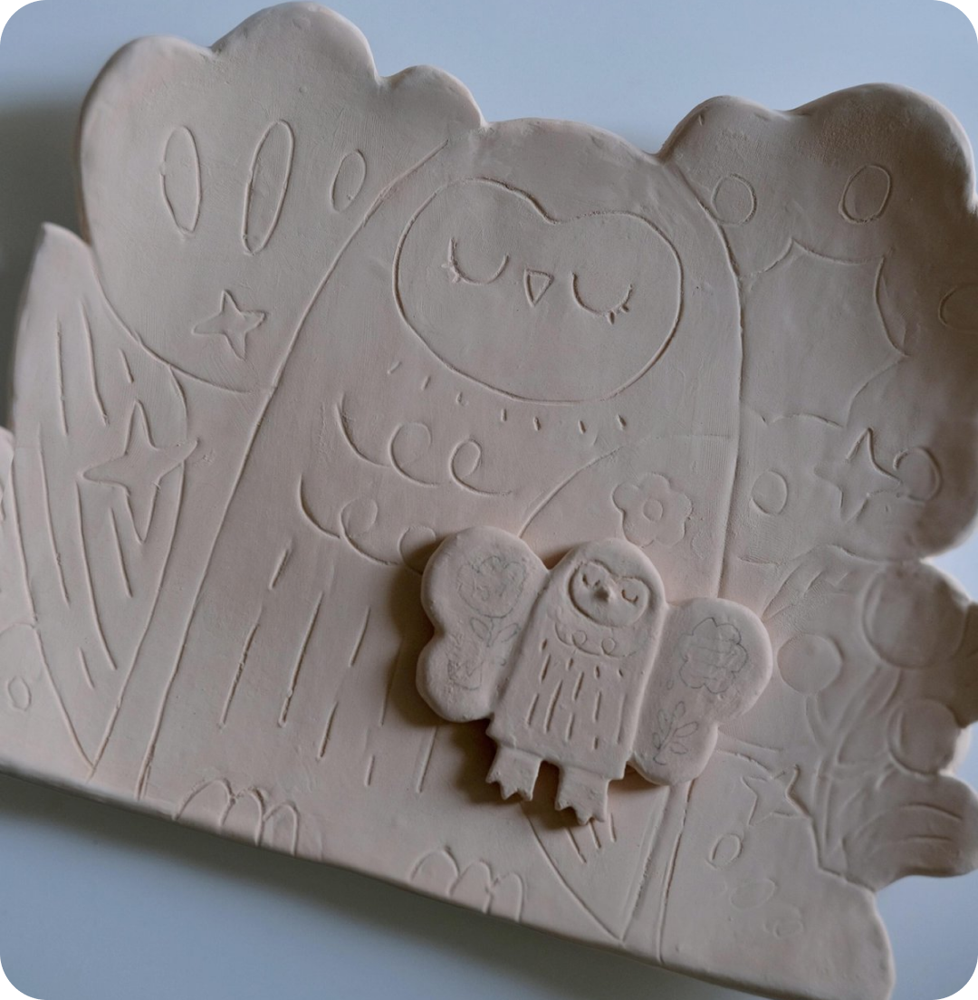

Quy trình chế tác
Lấm Lem là xưởng nhỏ thành lập từ năm 2019, do nghệ nhân trẻ sáng lập với mong muốn đưa gốm thủ công Việt đến gần căn bếp và góc nhà của người trẻ. Mỗi sản phẩm đều đi qua đủ 5 công đoạn:
Đất sét được lọc sạch tạp chất, nhào kỹ để hết bọt khí — bước quyết định độ bền của gốm.
Người thợ nặn từng chiếc một. Không khuôn đúc hàng loạt, không hai chiếc nào giống hệt nhau.
Phơi tự nhiên 2–3 ngày rồi tỉa lại đáy, miệng và quai cho cân đối, êm tay.
Lần nung đầu giúp gốm cứng lại để chuẩn bị phủ men.
Lần nung quyết định màu men và độ bền. Men đạt độ chín, an toàn cho thực phẩm.
Tìm hiểu trước khi chọn
Mỗi loại men cho một kết quả khác hẳn sau khi nung. Xem nhanh 1 phút để chọn đúng gu — khỏi cần tới tận xưởng.
Ra lò: xám mờ, điểm vân tro tự nhiên, bề mặt lì và hơi sần tay.
Ví dụ: Cốc Táo Đỏ, lớp sáng Thứ 7...
Ra lò: màu loang theo lửa nung — nâu, vàng, đen trộn nhau, không đoán trước được.
Hợp gu cá tính, hoài cổ · Có ở: Bình hoa men hỏa biến
Ra lò: hồng phấn mịn, lì, nhẹ nhàng — lên hình rất sáng và sạch.
Hợp gu trẻ trung, làm quà · Có ở: Bộ cốc hồng phấn
Ra lò: ánh xà cừ nhẹ, bóng mượt, nhìn sang — hợp làm điểm nhấn trong nhà.
Hợp gu tinh tế, trang trí · Có ở: Bình đắp nổi “Vườn Xuân”
Ít chi tiết, tông đất, men lì. Gợi ý: Bình mộc men lì, Bộ cốc men tro xám.
Xem sản phẩm gợi ýMen loang lửa, tông nâu ấm. Gợi ý: Bình hoa men hỏa biến, Set 4 cốc “Sắc Đất”.
Xem sản phẩm gợi ýMàu tươi, họa tiết vui mắt. Gợi ý: Bộ cốc hồng phấn, Cốc họa tiết vẽ tay.
Xem sản phẩm gợi ýGọi cho xưởng — người thợ tư vấn trực tiếp, miễn phí, 8:30–19:00 mỗi ngày.
Trải nghiệm tại xưởng
Chưa từng chạm vào đất sét cũng không sao. Trong 2 giờ tại xưởng, bạn được ngồi vào bàn xoay, tự tay nặn, tạo dáng và chọn men cho một sản phẩm của riêng mình — người thợ của Lấm Lem kèm bên cạnh từ bước đầu tiên đến khi ra lò.
